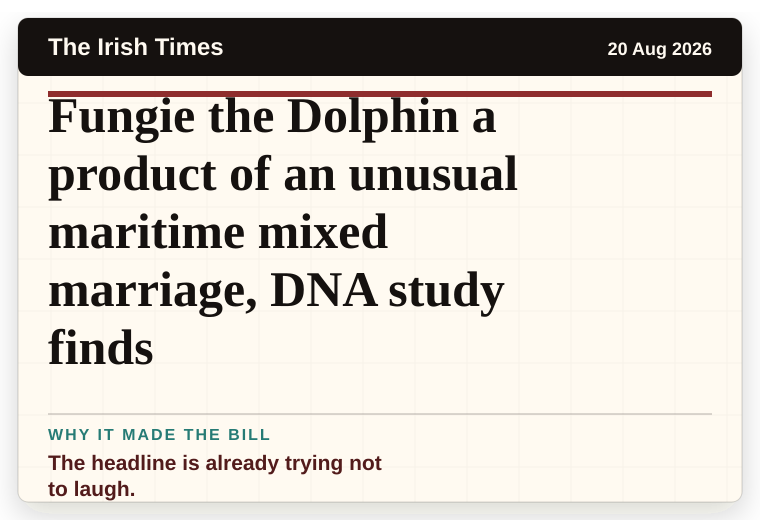
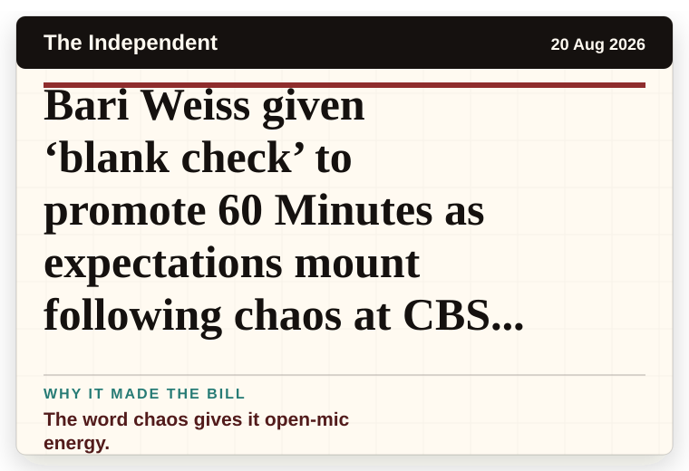
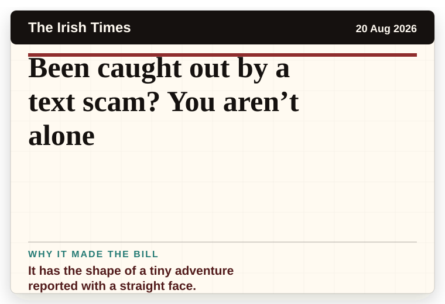
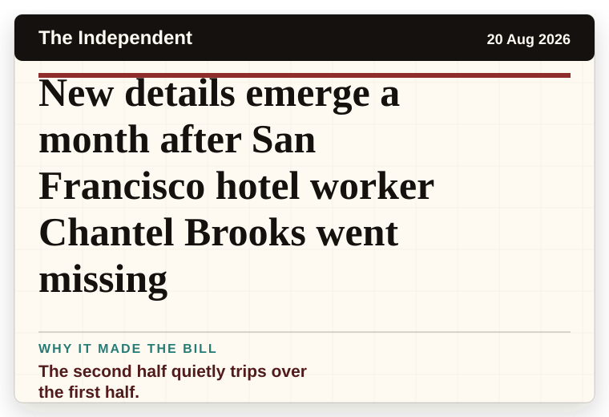
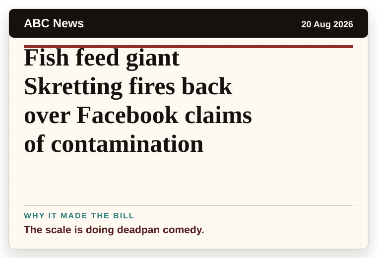
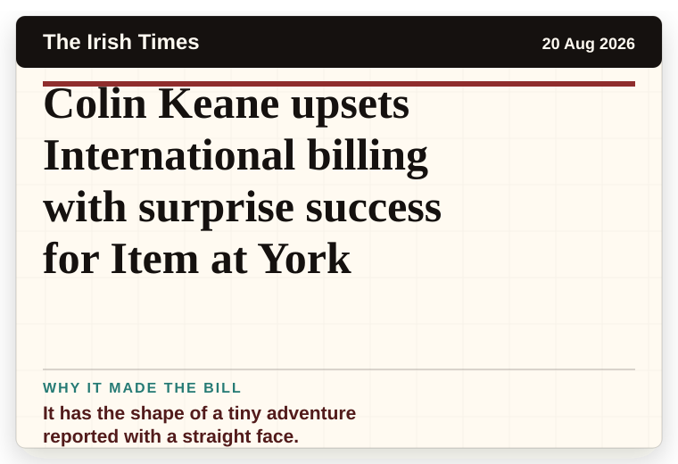
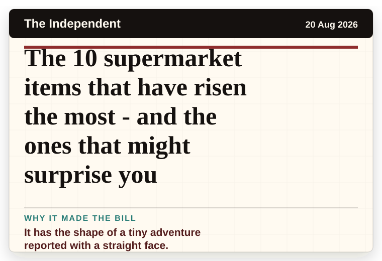
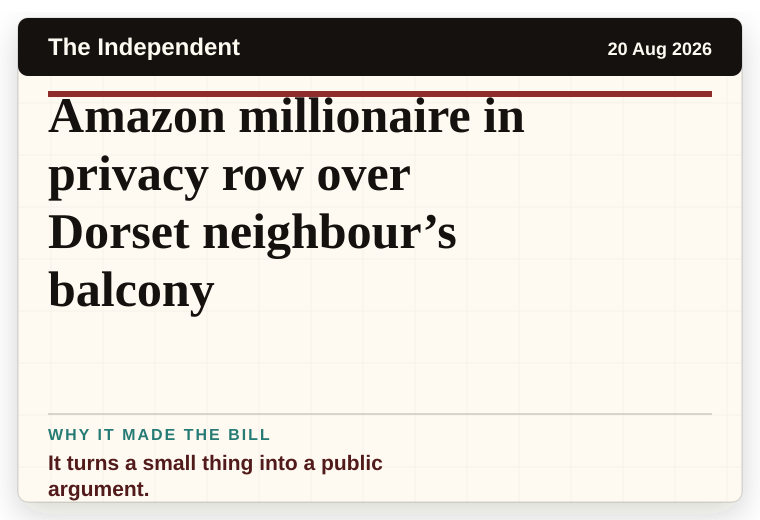
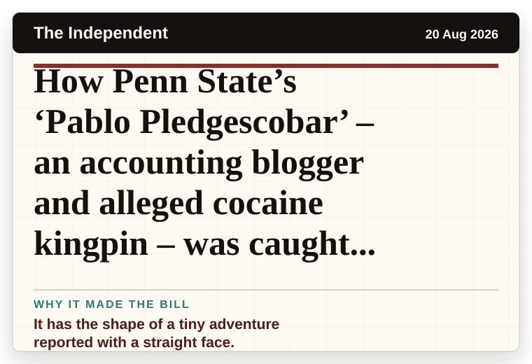

Daily Mail Science
United Kingdom
US government hiding bodies of FOUR alien races, Pentagon's UFO scientist claims: 'I've seen the evidence'
A wonderfully specific detail has taken centre stage.
The latest daily picks, linked back to the original sources. Search the room, pick a source, or follow a headline out to the full story.
Record updated: 20 Aug 2026, 07:42 AM AEST
Showing 18 headline candidates from the refresh run completed on 20 Aug 2026, 07:42 AM AEST.
A wonderfully specific detail has taken centre stage.

The headline is already trying not to laugh.

It has the shape of a tiny adventure reported with a straight face.

The scale is doing deadpan comedy.

The scale is doing deadpan comedy.

It has the shape of a tiny adventure reported with a straight face.

A wonderfully specific detail has taken centre stage.

A very ordinary object has wandered into serious news.

It has the magic news word: accidentally.

The headline is already trying not to laugh.

The word chaos gives it open-mic energy.

It has the shape of a tiny adventure reported with a straight face.

The second half quietly trips over the first half.

The scale is doing deadpan comedy.

It has the shape of a tiny adventure reported with a straight face.

It has the shape of a tiny adventure reported with a straight face.

It turns a small thing into a public argument.

It has the shape of a tiny adventure reported with a straight face.